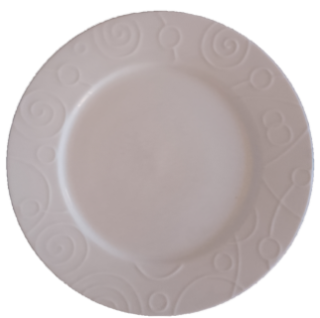

Tomato, Carrot and Onion Pasta
- 2 tins of chopped tomatoes
- 1 large onion
- 2 carrots (equal to amount of onion)
- 4 cloves of garlic
- 4 tablespoons of olive oil
- Teaspoon of salt
- Teaspoon of sugar
- Tablespoon of oregano (or italian herb mix)
- Tablespoon worcestershire sauce (or basalmic vinegar or anchovy fish sauce)
- 2 pieces of dark chocolate
- 500g of pasta (fusilli or penne pref.)
- (Optional) Bag of rocket
Prep. 10 mins / Cook 25 mins / Serves 4
- Fine dice (or as fine as you would like) the onion and carrots.
- Heat the olive oil in a pan and add the diced onion and carrots. Fry on a low heat.
- While the onion and carrots are cooking, chop the garlic into slices and add to the pan around halfway though cooking the carrots and onions (roughly 5 minutes in).
- Continue cooking the carrots, onion and garlic until the onion and garlic are golden (around another 5 minutes).
- Add the tins of tomatoes, salt, sugar, oregano and worcestershire sauce. Bring to a simmer, stir occassionally.
- While the sauce is cooking, bring a large pan of water (around 2 litres) to the boil. Add a dash of olive oil and salt to the water, then add the pasta. Cook for around 8-10 minutes.
- A minute before the pasta is done, add the dark chocolate to the main sauce, stirring until compleatly melted.
- Drain the pasta and add to the sauce. Cook for a futher 1-2 minutes, stirring frequently to coat the pasta.
- Serve (optionally add a small handful of rocket to a serving if you like).
Chickpea Curry
- 2 tins of chopped tomatoes
- 1 large onion
- 2 tins of chickpeas
- 4 cloves of garlic
- 4 tablespoons of sunflower (or vegetable oil)
- Teaspoon of turmeric powder
- Teaspoon of chilli powder
- Teaspoon of ground cumin
- Teaspoon of garam masala
- Teaspoon of salt
- Teaspoon of sugar
- 320g of rice
Prep 5 mins / Cook 30 mins / Serves 4
- Fine dice (or as fine as you would like) the onion.
- Heat the sunflower oil in a pan and add the diced onion. Fry on a low heat.
- While the onion is cooking, chop the garlic into slices and add to the pan around halfway though cooking the onion (roughly 5 minutes in).
- Continue cooking the onion and garlic until golden (around another 5 minutes).
- Drain and add the chickpeas along with the turmeric, cumin and chilli. Stir until you can smell the spices.
- Add the tins of tomatoes, salt and sugar. Bring to a simmer, stir occassionally.
- While the curry is cooking, bring a large pan of water (around 1 litres) to the boil. Wash the rice in a seive while bringing the water to boil.
- Add the rice to the boiling water. Cover and cook on a low heat until the water has gone (around 10 minutes), stirring once halfway through cooking.
- Turn off the heat and leave the rice to stand for 2-3 minutes. Stir the garam masala into the curry.
- Serve